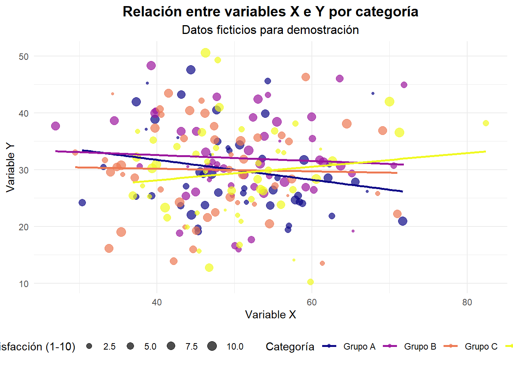

# Tu código R aquíDocumento Quarto
Bienvenidos/as a este tutorial de Quarto
Como vimos en la presentación, Quarto es un sistema moderno de creación de documentos dinámicos, informes, presentaciones, libros, sitios web y más, a partir de archivos de texto plano y por medio del conversor universal de documentos Pandoc. Está especialmente diseñado para elaborar documentos científicos y técnicos reproducibles.
¡Toda la evolución de los sistemas de autoría dentro del mismo documento!
Acá veremos la integración de Quarto en el entorno de desarrollo VSCode.
Estructura de documento
- YAMML (YAML Ain’t Markup Language) es un lenguaje de serialización de datos legible por humanos que se utiliza comúnmente para archivos de configuración.
¿Qué es YAML?
YAML es un formato de datos que: - Utiliza indentación para indicar estructura - Es case-sensitive (sensible a mayúsculas y minúsculas) - Utiliza espacios, no tabs, para la indentación - Es más legible que JSON o XML - En Quarto, el YAML header (encabezado YAML) cumple funciones esenciales: - Metadatos del documento - Configuración de formato - Opciones de ejecución - Configuraciones específicas
Ejemplo práctico
En el encabezado de este archivo tenemos:
---
title: "Documento Quarto" # Título del documento
author: # Autores (estructura anidada)
names:
- Juan Carlos Castillo
- Kevin Carrasco
- Tomás Urzúa
- Katherine Aravena
- René Canales
affiliation: Laboratorio de Investigación Social Abierta
date: today # Fecha automática
format: html # Formato de salida
lang: es # Idioma del documento
---El cuerpo
- En el cuerpo del documento figura el texto y los bloques de código que uno quiere incluir en el qmd.
R en Quarto
Para insertar código en Quarto, utilizamos chunks que se delimitan con:
Atajo de teclado para VSCode: Ctrl + Shift + I
Ejemplo práctico
Aquí un ejemplo de uso de código:
# Cargar librerías necesarias
library(ggplot2)
library(dplyr)
# Crear datos ficticios
set.seed(123) # Para reproducibilidad
datos_ejemplo <- data.frame(
categoria = rep(c("Grupo A", "Grupo B", "Grupo C", "Grupo D"), each = 50),
valor_x = rnorm(200, mean = 50, sd = 10),
valor_y = rnorm(200, mean = 30, sd = 8),
satisfaccion = sample(1:10, 200, replace = TRUE)
)
# Crear el gráfico
ggplot(datos_ejemplo, aes(x = valor_x, y = valor_y, color = categoria)) +
geom_point(aes(size = satisfaccion), alpha = 0.7) +
geom_smooth(method = "lm", se = FALSE) +
labs(
title = "Relación entre variables X e Y por categoría",
subtitle = "Datos ficticios para demostración",
x = "Variable X",
y = "Variable Y",
color = "Categoría",
size = "Satisfacción (1-10)"
) +
theme_minimal() +
theme(
plot.title = element_text(hjust = 0.5, size = 14, face = "bold"),
plot.subtitle = element_text(hjust = 0.5, size = 12),
legend.position = "bottom"
) +
scale_color_viridis_d(option = "plasma") +
scale_size_continuous(range = c(1, 4))

Este código genera: - Datos ficticios con 4 categorías y variables numéricas - Gráfico de dispersión con puntos coloreados por categoría - Líneas de tendencia para cada grupo - Tamaño de puntos proporcional a la satisfacción - Tema moderno con colores atractivos